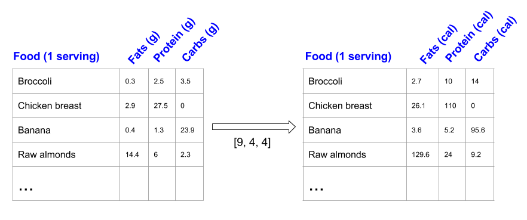
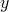
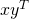
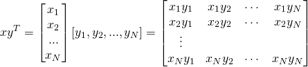

Broadcasting is Numpy's terminology for performing mathematical operations between arrays with different shapes. This article will explain why broadcasting is useful, how to use it and touch upon some of its performance implications.
Motivating example
Say we have a large data set; each datum is a list of parameters. In Numpy terms, we have a 2-D array, where each row is a datum and the number of rows is the size of the data set. Suppose we want to apply some sort of scaling to all these data - every parameter gets its own scaling factor; in other words, every parameter is multiplied by some factor.
Just to have something tangible to think about, let's count calories in foods using a macro-nutrient breakdown. Roughly put, the caloric parts of food are made of fats (9 calories per gram), protein (4 calories per gram) and carbs (4 calories per gram). So if we list some foods (our data), and for each food list its macro-nutrient breakdown (parameters), we can then multiply each nutrient by its caloric value (apply scaling) to compute the caloric breakdown of each food item [1]:
With this transformation, we can now compute all kinds of useful information. For example, what is the total number of calories in some food. Or, given a breakdown of my dinner - how much calories did I get from protein. And so on.
Let's see a naive way of producing this computation with Numpy:
In [65]: macros = array([
[0.3, 2.5, 3.5],
[2.9, 27.5, 0],
[0.4, 1.3, 23.9],
[14.4, 6, 2.3]])
# Create a new array filled with zeros, of the same shape as macros.
In [67]: result = zeros_like(macros)
In [69]: cal_per_macro = array([9, 4, 4])
# Now multiply each row of macros by cal_per_macro. In Numpy, `*` is
# element-wise multiplication between two arrays.
In [70]: for i in xrange(macros.shape[0]):
....: result[i, :] = macros[i, :] * cal_per_macro
....:
In [71]: result
Out[71]:
array([[ 2.7, 10. , 14. ],
[ 26.1, 110. , 0. ],
[ 3.6, 5.2, 95.6],
[ 129.6, 24. , 9.2]])
This is a reasonable approach when coding in a low-level programming language: allocate the output, loop over input performing some operation, write result into output. In Numpy, however, this is fairly bad for performance because the looping is done in (slow) Python code instead of internally by Numpy in (fast) C code.
Since element-wise operators like * work on arbitrary shapes, a better way would be to delegate all the looping to Numpy, by "stretching" the cal_per_macro array vertically and then performing element-wise multiplication with macros; this moves the per-row loop from above into Numpy itself, where it can run much more efficiently:
# Use the 'tile' function to replicate cal_per_macro over the number
# of rows 'macros' has (rows is the first element of the shape tuple for
# a 2-D array).
In [72]: cal_per_macro_stretch = tile(cal_per_macro, (macros.shape[0], 1))
In [73]: cal_per_macro_stretch
Out[73]:
array([[9, 4, 4],
[9, 4, 4],
[9, 4, 4],
[9, 4, 4]])
In [74]: macros * cal_per_macro_stretch
Out[74]:
array([[ 2.7, 10. , 14. ],
[ 26.1, 110. , 0. ],
[ 3.6, 5.2, 95.6],
[ 129.6, 24. , 9.2]])
Nice, it's shorter too. And much, much faster! To measure the speed I created a large random data set, with 1 million rows of 10 parameters each. The loop-in-Python method takes ~2.3 seconds to churn through it. The stretching method takes 30 milliseconds, a ~75x speedup.
And now, finally, comes the interesting part. You see, the operation we just did - stretching one array so that its shape matches that of another and then applying some element-wise operation between them - is actually pretty common. This often happens when we want to take a lower-dimensional array and use it to perform a computation along some axis of a higher-dimensional array. In fact, when taken to the extreme this is exactly what happens when we perform an operation between an array and a scalar - the scalar is stretched across the whole array so that the element-wise operation gets the same scalar value for each element it computes.
Numpy generalizes this concept into broadcasting - a set of rules that permit element-wise computations between arrays of different shapes, as long as some constraints apply. We'll discuss the actual constraints later, but for the case at hand a simple example will suffice: our original macros array is 4x3 (4 rows by 3 columns). cal_per_macro is a 3-element array. Since its length matches the number of columns in macros, it's pretty natural to apply some operation between cal_per_macro and every row of macros - each row of macros has the exact same size as cal_per_macro, so the element-wise operation makes perfect sense.
Incidentally, this lets Numpy achieve two separate goals - usefulness as well as more consistent and general semantics. Binary operators like * are element-wise, but what happens when we apply them between arrays of different shapes? Should it work or should it be rejected? If it works, how should it work? Broadcasting defines the semantics of these operations.
Back to our example. Here's yet another way to compute the result data:
In [75]: macros * cal_per_macro
Out[75]:
array([[ 2.7, 10. , 14. ],
[ 26.1, 110. , 0. ],
[ 3.6, 5.2, 95.6],
[ 129.6, 24. , 9.2]])
Simple and elegant, and the fastest approach to boot [2].
Defining broadcasting
Broadcasting is often described as an operation between a "smaller" and a "larger" array. This doesn't necessarily have to be the case, as broadcasting applies also to arrays of the same size, though with different shapes. Therefore, I believe the following definition of broadcasting is the most useful one.
Element-wise operations on arrays are only valid when the arrays' shapes are either equal or compatible. The equal shapes case is trivial - this is the stretched array from the example above. What does "compatible" mean, though?
To determine if two shapes are compatible, Numpy compares their dimensions, starting with the trailing ones and working its way backwards [3]. If two dimensions are equal, or if one of them equals 1, the comparison continues. Otherwise, you'll see a ValueError raised (saying something like "operands could not be broadcast together with shapes ...").
When one of the shapes runs out of dimensions (because it has fewer dimensions than the other shape), Numpy will use 1 in the comparison process until the other shape's dimensions run out as well.
Once Numpy determines that two shapes are compatible, the shape of the result is simply the maximum of the two shapes' sizes in each dimension.
Put a little bit more formally, here's a pseudo-algorithm:
Inputs: array A with m dimensions; array B with n dimensions
p = max(m, n)
if m < p:
left-pad A's shape with 1s until it also has p dimensions
else if n < p:
left-pad B's shape with 1s until is also has p dimensions
result_dims = new list with p elements
for i in p-1 ... 0:
A_dim_i = A.shape[i]
B_dim_i = B.shape[i]
if A_dim_i != 1 and B_dim_i != 1 and A_dim_i != B_dim_i:
raise ValueError("could not broadcast")
else:
result_dims[i] = max(A_dim_i, B_dim_i)
Examples
The definition above is precise and complete; to get a feel for it, we'll need a few examples.
I'm using the Numpy convention of describing shapes as tuples. macros is a 4-by-3 array, meaning that it has 4 rows with 3 columns each, or 4x3. The Numpy way of describing the shape of macros is (4, 3):
In [80]: macros.shape
Out[80]: (4, 3)
When we computed the caloric table using broadcasting, what we did was an operation between macros - a (4, 3) array, and cal_per_macro, a (3,) array [4]. Therefore, following the broadcasting rules outlined above, the shape (3,) is left-padded with 1 to make comparison with (4, 3) possible. The shapes are then deemed compatible and the result shape is (4, 3), which is exactly what we observed.
Schematically:
(4, 3) (4, 3)
== padding ==> == result ==> (4, 3)
(3,) (1, 3)
Here's another example, broadcasting between a 3-D and a 1-D array:
(3,) (1, 1, 3)
== padding ==> == result ==> (5, 4, 3)
(5, 4, 3) (5, 4, 3)
Note, however, that only left-padding with 1s is allowed. Therefore:
(5,) (1, 1, 5)
== padding ==> ==> error (5 != 3)
(5, 4, 3) (5, 4, 3)
Theoretically, had the broadcasting rules been less rigid - we could say that this broadcasting is valid if we right-pad (5,) with 1s. However, this is not how the rules are defined - therefore these shapes are incompatible.
Broadcasting is valid between higher-dimensional arrays too:
(5, 4, 3) (1, 5, 4, 3)
== padding ==> == result ==> (6, 5, 4, 3)
(6, 5, 4, 3) (6, 5, 4, 3)
Also, in the beginning of the article I mentioned that broadcasting can happen for arrays with the same ndim, as long as the shapes are compatible:
(5, 4, 1)
== no padding needed ==> result ==> (5, 4, 3)
(5, 1, 3)
Finally, scalars are treated specially as 1-dimensional arrays with size 1:
In [93]: ones((4, 3)) + 1
Out[93]:
array([[ 2., 2., 2.],
[ 2., 2., 2.],
[ 2., 2., 2.],
[ 2., 2., 2.]])
# Is the same as:
In [94]: one = ones((1, 1))
In [95]: one
Out[95]: array([[ 1.]])
In [96]: ones((4, 3)) + one
Out[96]:
array([[ 2., 2., 2.],
[ 2., 2., 2.],
[ 2., 2., 2.],
[ 2., 2., 2.]])
Explicit broadcasting with numpy.broadcast
In the examples above, we've seen how Numpy employs broadcasting behind the scenes to match together arrays that have compatible, but not similar, shapes. We can also ask Numpy for a more explicit exposure of broadcasting, using the numpy.broadcast class:
In [103]: macros.shape
Out[103]: (4, 3)
In [104]: cal_per_macro.shape
Out[104]: (3,)
In [105]: b = broadcast(macros, cal_per_macro)
Now b is an object of type numpy.broadcast, and we can query it for the result shape of broadcasting, as well as use it to iterate over pairs of elements from the input arrays in the order matched by broadcasting them:
In [108]: b.shape
Out[108]: (4, 3)
In [120]: for i, j in b:
print '{0}: {1} {2}'.format(b.index, i, j)
.....:
1: 0.3 9
2: 2.5 4
3: 3.5 4
4: 2.9 9
5: 27.5 4
6: 0.0 4
7: 0.4 9
8: 1.3 4
9: 23.9 4
10: 14.4 9
11: 6.0 4
12: 2.3 4
This lets us see very explicitly how the "stretching" of cal_per_macro is done to match the shape of macros. So if you ever want to perform some complex computation on two arrays whose shapes aren't similar but compatible, and you want to use broadcasting, numpy.broadcast can help.
Computing outer products with broadcasting
As another cool example of broadcasting rules, consider the outer product of two vectors.
In linear algebra, it is customary to deal with column vectors by default, using a transpose for row vector. Therefore, given two vectors and , their "outer product" is defined as . Treating and as Nx1 matrices this matrix multiplication results in:
How can we implement this in Numpy? Note that the shape of the row vector is (1, N) [5]. The shape of the column vector is (N, 1). Therefore, if we apply an element-wise operation between them, broadcasting will kick in, find that the shapes are compatible and the result shape is (N, N). The row vector is going to be "stretched" over N rows and the column vector over N columns - so we'll get the outer product! Here's an interactive session that demonstrates this:
In [137]: ten = arange(1, 11)
In [138]: ten
Out[138]: array([ 1, 2, 3, 4, 5, 6, 7, 8, 9, 10])
In [139]: ten.shape
Out[139]: (10,)
# Using Numpy's reshape method to convert the row vector into a
# column vector.
In [140]: ten.reshape((10, 1))
Out[140]:
array([[ 1],
[ 2],
[ 3],
[ 4],
[ 5],
[ 6],
[ 7],
[ 8],
[ 9],
[10]])
In [141]: ten.reshape((10, 1)).shape
Out[141]: (10, 1)
# Let's see what the 'broadcast' class tells us about the resulting
# shape of broadcasting ten and its column-vector version
In [142]: broadcast(ten, ten.reshape((10, 1))).shape
Out[142]: (10, 10)
In [143]: ten * ten.reshape((10, 1))
Out[143]:
array([[ 1, 2, 3, 4, 5, 6, 7, 8, 9, 10],
[ 2, 4, 6, 8, 10, 12, 14, 16, 18, 20],
[ 3, 6, 9, 12, 15, 18, 21, 24, 27, 30],
[ 4, 8, 12, 16, 20, 24, 28, 32, 36, 40],
[ 5, 10, 15, 20, 25, 30, 35, 40, 45, 50],
[ 6, 12, 18, 24, 30, 36, 42, 48, 54, 60],
[ 7, 14, 21, 28, 35, 42, 49, 56, 63, 70],
[ 8, 16, 24, 32, 40, 48, 56, 64, 72, 80],
[ 9, 18, 27, 36, 45, 54, 63, 72, 81, 90],
[ 10, 20, 30, 40, 50, 60, 70, 80, 90, 100]])
The output should be familiar to anyone who's finished grade school, of course.
Interestingly, even though Numpy has a function named outer that computes the outer product between two vectors, my timings show that at least in this particular case broadcasting multiplication as shown above is more than twice as fast - so be sure to always measure.
Use the right tool for the job
I'll end this article with another educational example that demonstrates a problem that can be solved in two different ways, one of which is much more efficient because it uses the right tool for the job.
Back to the original example of counting calories in foods. Suppose I just want to know how many calories each serving of food has (total from fats, protein and carbs).
Given the macros data and a cal_per_macro breakdown, we can use the broadcasting multiplication as seen before to compute a "calories per macro" table efficiently, for each food. All that's left is to add together the columns in each row into a sum - this will be the number of calories per serving in that food:
In [160]: macros * cal_per_macro
Out[160]:
array([[ 2.7, 10. , 14. ],
[ 26.1, 110. , 0. ],
[ 3.6, 5.2, 95.6],
[ 129.6, 24. , 9.2]])
In [161]: sum(macros * cal_per_macro, axis=1)
Out[161]: array([ 26.7, 136.1, 104.4, 162.8])
Here I'm using the axis parameter of the sum function to tell Numpy to sum only over axis 1 (columns), rather than computing the sum of the whole multi-dimensional array.
Looks easy. But is there a better way? Indeed, if you think for a moment about the operation we've just performed, a natural solution emerges. We've taken a vector (cal_per_macro), element-wise multiplied it with each row of macros and then added up the results. In other words, we've computed the dot-product of cal_per_macro with each row of macros. In linear algebra there's already an operation that will do this for the whole input table: matrix multiplication. You can work out the details on paper, but it's easy to see that multiplying the matrix macros on the right by cal_per_macro as a column vector, we get the same result. Let's check:
# Create a column vector out of cal_per_macro
In [168]: cal_per_macro_col_vec = cal_per_macro.reshape((3, 1))
# Use the 'dot' function for matrix multiplication. Starting with Python 3.5,
# we'll be able to use an operator instead: macros @ cal_per_macro_col_vec
In [169]: macros.dot(cal_per_macro_col_vec)
Out[169]:
array([[ 26.7],
[ 136.1],
[ 104.4],
[ 162.8]])
On my machine, using dot is 4-5x faster than composing sum with element-wise multiplication. Even though the latter is implemented in optimized C code in the guts of Numpy, it has the disadvantage of moving too much data around - computing the intermediate matrix representing the broadcasted multiplication is not really necessary for the end product. dot, on the other hand, performs the operation in one step using a highly optimized BLAS routine.
| [1] | For the pedantic: I'm taking these numbers from http://www.calorieking.com, and I subtract the fiber from total carbs because it doesn't count for the calories. |
| [2] | About 30% faster than the "stretching" method. This is mostly due to the creation of the ..._stretch array, which takes time. Once the stretched array is there, the broadcasting method is ~5% faster - this difference being due to a better use of memory (we don't really have to create the whole stretched array, do we? It's just repeating the same data so why waste so much memory?) |
| [3] | For the shape (4, 3, 2) the trailing dimension is 2, and working from 2 "backwards" produces: 2, then 3, then 4. |
| [4] | Following the usual Python convention, single-element tuples also have a comma, which helps us distinguish them from other entities. |
| [5] | More precisely, (1, N) is the shape of a 1-by-N matrix (matrix with one row and N columns). An actual row vector is just a 1D array with the single-dimension shape (10,). For most purposes, the two are equivalent in Numpy. |